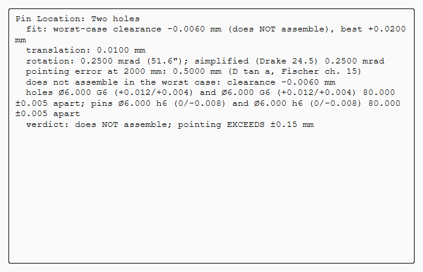
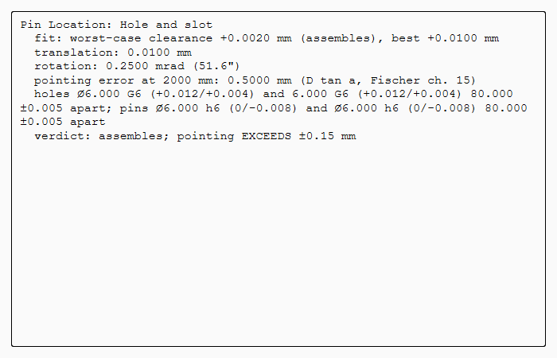
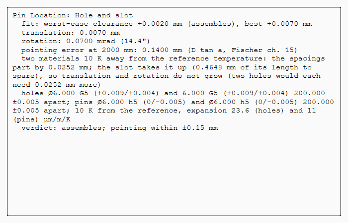
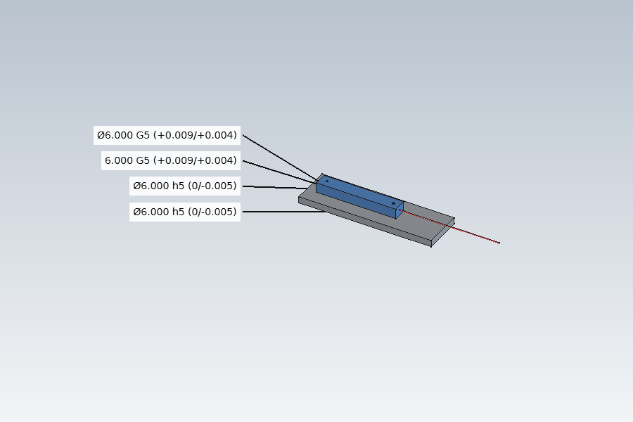

Tutorial X: Locating a laser module with two pins
| Books |
Drake, Dimensioning and Tolerancing Handbook, ch. 24 (pinned interfaces); Fischer, Mechanical Tolerance Stackup and Analysis, ch. 15 (the lever of an angle error); the module is ours |
| You learn |
Analysis › Pin Location from PMI; why two tight holes do not assemble; what a slot does; pin base and ISO 286 class against pointing error; aluminium on steel at another temperature |
| Sizes |
Ø6 pins pressed into a steel bench; an aluminium laser module with Ø6 holes; the beam must hit a target 2 m away within ±0.15 mm |
The module (Aluminum-6061-T6, 23.6 µm/m/K) sits on two pins in the bench (Steel-1C45, 11 µm/m/K). Its beam leaves along the line of the pins: if the module turns by α about the vertical, the spot moves by 2000 tan α on the target.
Step by step
1. The layout and its PMI
The bench, the module and the beam are made by script, the materials assigned, and the PMI added as in tutorial T: the holes Ø6 G6 (+0.004 to +0.012), the pins Ø6 h6 (0 to −0.008). Holes and pins are 80 mm apart, each spacing ±0.005.
2. Pin Location: two holes do not assemble
Select the four PMI dimensions, Analysis › Pin Location. Type the spacing tolerances (0.005), the distance to the target (2000) and the pointing limit (0.15); OK.
The worst-case clearance is −0.006 mm: the holes leave 0.004 mm, but the two spacings may differ by 0.010 mm (Drake 24.2). Some modules would not go on. The materials' expansion coefficients are already filled in.

3. A hole and a slot
The second hole becomes a slot 6 G6 wide and 7 long along the line of centres; its width gets a PMI dimension with G6, and the analysis takes it as its second feature. Double-click the analysis and type the slot length, 7.
It assembles: the slot takes the spacings out of the fit (Drake 24.12). The module can shift 0.010 mm and turn 0.25 mrad: 0.50 mm on the target, over the ±0.15 mm limit.

4. A wider pin base
The pins and the hole and slot move to 200 mm apart. The PMI and the analysis follow the model: the same clearances now turn the module 0.10 mrad, 0.20 mm on the target. Still over.
5. Finer classes
The holes and the slot become G5, the pins h5, in the PMI’s Fit. Translation 0.007 mm, rotation 0.070 mrad, pointing 0.14 mm: within ±0.15 mm.
6. Assembled 10 K warm
Double-click the analysis and type 10 K. Aluminium on steel, 200 mm apart: the spacings part by 0.0252 mm (Drake 24.10). With two holes, each would have to grow by that much, adding 0.0126 mm of translation and 0.126 mrad of rotation, more than the budget. The slot takes it up in its length; translation and rotation stay as they were.


The replay
| # | In the book (NX) | In FreeCAD NX-Style | Result | Notes |
|---|---|---|---|---|
X1 |
The layout: a steel bench with two Ø6 pins 80 mm apart, an aluminium laser module with two Ø6 holes, the beam; PMI: holes G6, pins h6 |
modelled by script, materials Steel-1C45 and Aluminum-6061-T6 assigned, PMI made as in tutorial T |
differs |
PMI ['Ø6.000 G6 (+0.012/+0.004)', 'Ø6.000 G6 (+0.012/+0.004)', 'Ø6.000 h6 (0/-0.008)', 'Ø6.000 h6 (0/-0.008)']; the beam must hit a target 2 m away within ±0.15 mm |
X2 |
Analysis > Pin Location: two holes G6 on pins h6, spacings ±0.005 |
the four PMI dimensions selected + ribbon 'Analysis › Tolerance > Pin Location'; tolerances, target 2000 mm and limit ±0.15 typed; MB2 = OK |
differs |
clearance -0.0060 mm: does NOT assemble; pointing EXCEEDS ±0.15 mm. Drake 24.2: the holes' clearance (0.004 mm) cannot absorb the 0.010 mm the spacings may differ. Expansion from the materials: 23.6 and 11 µm/m/K. NX has no pin location analysis (a variation analysis add-on does this) |
X3 |
The second hole becomes a slot 6 G6 wide, 7 long, along the line of centres |
the model changed by script, the slot’s width dimensioned G6; the analysis double-clicked, slot length 7 typed, MB2 = OK |
differs |
assembles; pointing EXCEEDS ±0.15 mm; clearance +0.0020 mm, translation 0.0100 mm, rotation 0.2500 mrad, pointing 0.5000 mm at 2 m (D tan a). Drake 24.12: the slot takes the spacings out of the fit |
X4 |
The pins 200 mm apart instead of 80: the same clearances turn the module less |
the model changed by script; the PMI and the analysis follow |
differs |
spacings 200.000 / 200.000 mm measured from the model; rotation 0.1000 mrad, pointing 0.2000 mm: assembles; pointing EXCEEDS ±0.15 mm |
X5 |
Finer ISO 286 classes: holes and slot G5, pins h5 |
the PMI’s Fit properties (as in tutorial V’s ECO) |
differs |
translation 0.0070 mm, rotation 0.0700 mrad, pointing 0.1400 mm: assembles; pointing within ±0.15 mm |
X6 |
Assembled 10 K above the reference temperature: aluminium on steel |
the analysis double-clicked, 10 K typed, MB2 = OK |
differs |
the spacings part by 0.0252 mm (Drake 24.10: 200 mm x 10 K x (23.6 - 11.0) µm/m/K); the slot takes it up; assembles; pointing within ±0.15 mm |
X7 |
The bench, the module on its pins and the beam |
render of the graphics window |
same |
2.4% of the view shows the part |
| Result | Means |
|---|---|
same |
The book’s NX steps work as written. |
differs |
It works, but the FreeCAD way is different; the notes say how. |
limit |
The book’s way fails in FreeCAD itself; a workaround follows in the next steps. |
missing |
FreeCAD has no such function; a stand-in follows. |
skipped |
Not replayed; the notes give the reason. |
FAILED |
Did not work. |